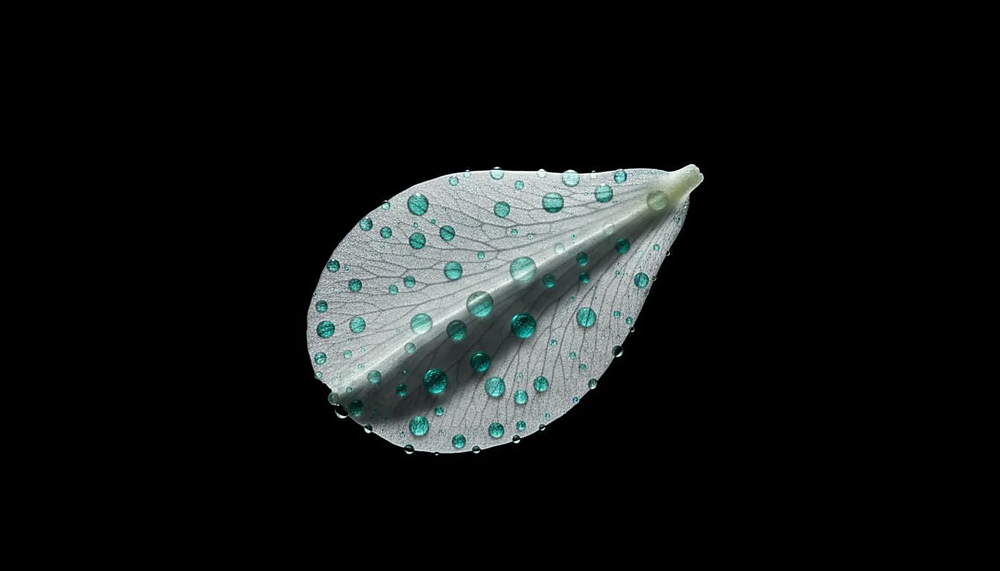
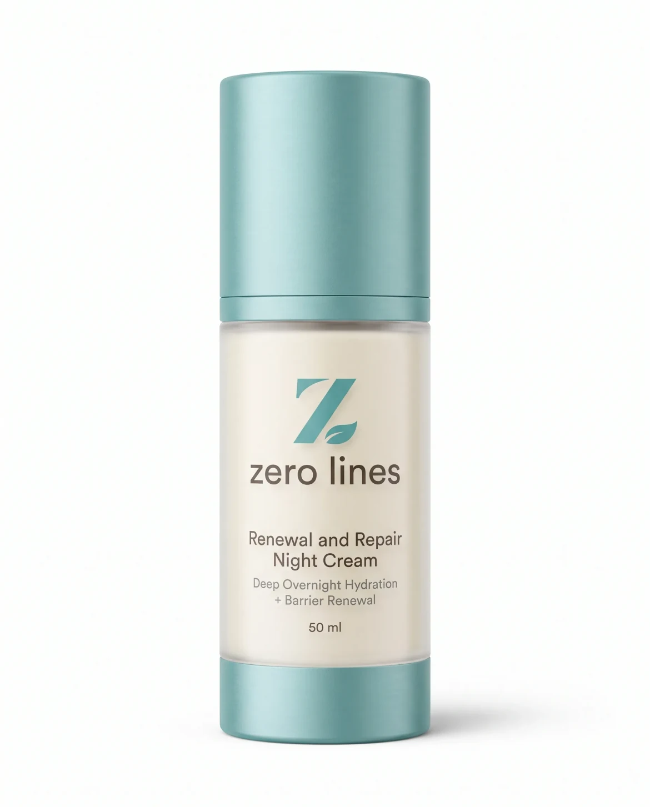

Lifestyle
How Sleep Repairs Your Skin (And What Happens When You Don't)
There's a reason it's called beauty sleep. While you rest, your skin is anything but idle. Blood flow increases. Cellular turnover accelerates. Growth hormone surges. Collagen synthesis peaks. Antioxidant defences rebuild. All of this happens during specific windows of the night — and missing those windows has consequences that show on your face.
The Nighttime Repair Window
Your skin operates on a circadian rhythm, just like the rest of your body. Research published in the Journal of Investigative Dermatology has mapped this rhythm in detail:
- 9 PM – 11 PM: Skin begins transitioning from defence to repair mode. Blood flow to the skin increases, delivering nutrients and removing metabolic waste.
- 11 PM – 2 AM: Peak repair phase. Cellular turnover is up to eight times faster than during the day. Growth hormone peaks, stimulating collagen production and tissue repair.
- 2 AM – 4 AM: Melatonin production peaks. This hormone is a potent antioxidant that neutralises free radicals accumulated during the day.
- 4 AM – 6 AM: Cortisol begins rising in preparation for waking. Skin temperature drops slightly, and barrier permeability decreases as the skin prepares for daytime defence.
If you're consistently asleep by 11 PM and wake around 7 AM, you capture the full repair window. If you're going to bed at 1 AM and waking at 6 AM, you're missing the most productive hours — and your skin knows it.
What Sleep Deprivation Does to Skin
A 2013 study by University Hospitals Case Medical Center made the effects quantifiable. Researchers found that poor sleepers showed:
- Signs of accelerated skin ageing — fine lines, uneven pigmentation, reduced elasticity
- Slower recovery from environmental stressors like UV exposure and barrier disruption
- Lower self-perception of skin appearance (confirmed by blinded assessors)
The mechanism is multifactorial. Sleep deprivation:
- Increases cortisol: Even one night of poor sleep elevates cortisol by up to 45%. Chronic elevation breaks down collagen and impairs barrier repair.
- Reduces growth hormone: GH is released primarily during deep sleep. Less deep sleep means less collagen-stimulating hormone.
- Decreases blood flow: Sleep-deprived skin receives less oxygen and fewer nutrients, leading to dullness and poor tone.
- Impairs immune function: Skin's ability to fight infection and repair damage depends on immune cells that circulate during sleep.
Sleep Quality, Not Just Quantity
Eight hours of fragmented sleep — waking multiple times, scrolling on your phone, dealing with a snoring partner — is not equivalent to eight hours of uninterrupted sleep. The deepest, most restorative phases (slow-wave sleep and REM) occur in longer cycles when sleep is continuous.
Practical measures to improve sleep quality:
- Keep the bedroom cool (16–19°C) — skin temperature regulation is crucial for sleep onset
- No screens for 60 minutes before bed — blue light suppresses melatonin
- Consistent bedtime, even on weekends — irregular schedules disrupt circadian rhythm
- Limit alcohol — it fragments sleep architecture even if it helps you fall asleep
- Use a silk pillowcase — reduces friction on skin and hair, minimising sleep creases
Skincare That Supports Sleep
What you put on your skin before bed can either support or interfere with nighttime repair. Heavy occlusive products can trap heat and increase skin temperature, potentially disrupting sleep. Products with stimulating ingredients — high-concentration acids, peppermint, caffeine — can increase blood flow and alertness.
Our Renewal and Repair Night Cream was formulated with sleep in mind. The texture is rich enough to prevent trans-epidermal water loss but breathable enough to avoid overheating. The lavender floral water — a genuine hydrosol, not synthetic fragrance — has been shown in multiple studies to support relaxation and sleep quality. Niacinamide supports the barrier without stimulating circulation.

Renewal and Repair Night Cream
Rich but breathable overnight repair with niacinamide, hydrolyzed collagen, and lavender floral water. Formulated to support — not disrupt — your skin's natural sleep cycle.
View Product →AI-Powered Analysis
See Your Skin Like Never Before
Upload a photo and answer 10 quick questions. Our AI analyses texture, tone, hydration, ageing signs, and lifestyle factors — then delivers a complete dermatologist-style report.
Analyse Your SkinThe 7-Day Sleep Challenge
If you're sceptical about the sleep-skin connection, try this: for one week, get 7.5–8 hours of sleep with a consistent bedtime before 11 PM. No alcohol. No late-night screens. Take a photo of your face on day 1 and day 7, same lighting, same time of day.
Most people see visible improvement in under-eye darkness, skin tone evenness, and overall radiance within 5–7 days. The effect is real, measurable, and free.
The Stages of Sleep and Skin Repair
Sleep isn't a single state — it cycles through distinct stages, each with different implications for skin health. During deep sleep (slow-wave sleep), growth hormone release peaks, stimulating collagen synthesis and cellular repair. During REM sleep, blood flow to the skin increases, delivering oxygen and nutrients while removing metabolic waste.
Chronic sleep deprivation disrupts both processes. Growth hormone release is blunted, reducing overnight repair. Elevated cortisol from sleep disruption breaks down collagen and impairs barrier function. And the immune suppression that accompanies poor sleep makes skin more susceptible to inflammation and infection.
How Much Sleep Does Your Skin Need?
The research consensus is 7–9 hours for adults, but quality matters as much as quantity. Five hours of uninterrupted deep sleep delivers more repair benefit than eight hours of fragmented, restless sleep. Sleep hygiene — consistent bedtime, dark room, cool temperature (18–20°C), no screens for an hour before bed — improves sleep quality more than simply extending time in bed.
If you can't get ideal sleep, your skincare routine becomes even more important. A comprehensive evening protocol with peptides, antioxidants, and barrier-supporting ingredients can partially compensate for reduced overnight repair — though it cannot fully replace the benefits of adequate sleep.
"Sleep is the only free skincare treatment that actually works. No product can replicate what happens to your skin during a good night's sleep."
— Zero Lines Clinical Advisory Board
Sources & References
- Kahan V et al. Can poor sleep affect skin integrity? Medical Hypotheses. 2010;75(6):535-537.
- Oyetakin-White P et al. Does poor sleep quality affect skin ageing? Clinical and Experimental Dermatology. 2015;40(1):17-22.
- Axelsson J et al. Beauty sleep: experimental study on the perceived health and attractiveness of sleep deprived people. BMJ. 2010;341:c6614.
Track Your Skin's Sleep Response
Our AI Skin Analyser can track changes in your skin over time — including the measurable improvement that comes from consistent, quality sleep.
Analyse Your SkinRelated Reading